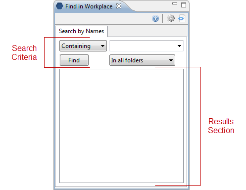
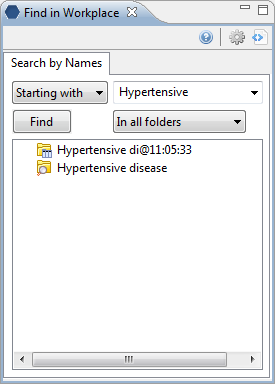
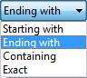
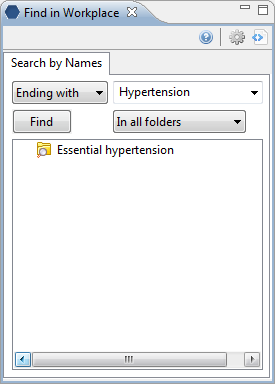
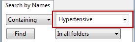
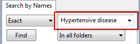

i2b2 Find in Workplace View
The Find in Workplace view is designed to allow users to search the Workplace view for terms stored in their folders.
Layout of the Find in Workplace View
Introduction
This section describes the layout and contents of this view.
As stated earlier the Find in Workplace view is designed to allow users to search the Workplace view for terms stored in their folders.

Search Criteria
There are three fields in this section; (1) Qualifier, (2) Text and (3) Folder selection.
Qualifier
The qualifier is user to tell the system whether or not you are looking for an exact match or just a partial match. There are four different options to choose from.
Text
The text box is where you will enter what you are searching for.
Folder Selection
The folder selection field allows you to narrow down the search to a particular user folder.
Navigation
This section contains information about expanding and collapsing folders and setting the display options.
Depending on the search criteria, the results section may
display groups of concepts which are contained in folders as well as individual
concepts. The folders can be expanded to see the listing of concepts in that
grouping by clicking on the plus sign ( )
or negative sign (
)
or negative sign ( ) next to the
folder icon.
) next to the
folder icon.
Expand (Open) a Folder
1. Click
on the plus sign ( ) next to the
folder in the results section of Find in Workplace view.
) next to the
folder in the results section of Find in Workplace view.
2. The folder will open and all the items in the folder will display.
Collapse (Close) a Folder
1. Click
on the negative sign ( ) next to the
folder in the results section of Find in Workplace view.
) next to the
folder in the results section of Find in Workplace view.
2. The folder will close and all the items in the folder will no longer appear in the view.
Users can define how many items to display and whether or not to show hidden terms. The display options are set in the Find in Workplace options, which can be accessed by clicking on the Options button ().

Maximum to Display
The Maximum number of children to display is used when the system is retrieving the items to display in the results section of the Find in Workplace view. Once the maximum number is reached a message will appear informing you that the query has reached the maximum defined and that continuing to retrieve all the items in the list may affect performance. You will have the option to continue or to cancel the action.

Show Hiddens
In the metadata table, an attribute is set to determine whether or not a term is active, inactive or hidden. If an item is marked as hidden it will not appear in the list of results. Selecting Show Hiddens will display those items marked to be hidden.
Searching The Workplace View
This section describes how to search for an item within the Find in Workplace view.
The first step in entering the search criteria is defining a qualifier. The first field is the “qualifier” and it is a drop-down list with four options.
1. Starting with
The results returned will contain only those items whose name begins with the text entered in the search box.
2. Ending with
The results returned will contain only those items whose name ends with the text entered in the search box.
3. Containing
The results returned will contain those items who contain the text entered in the search box.
|
|
NOTE: |
|
|
|
This search will return the broadest range of results. |
|
4. Exact
The results returned will contain only those items whose name matches exactly to the text entered in the search box.
|
|
NOTE: |
|
|
|
This search will return the narrowest range of results. |
|
1. Click on the drop-down arrow located in the qualifier field.

2. Select Starting with from the drop-down list.

3. In the text box enter the text for the item you are searching for.

4. To narrow your search to a particular folder, click on the drop-down arrow in the folder selection box. Otherwise, accept the default of “In all folders”.
5.
Click on the Find button. 
6. The results will be displayed in the results section.

1. Click on the drop-down arrow located in the qualifier field.
2. Select Ending with from the drop-down list.

3. In the text box enter the text for the item you are searching for.

4. To narrow your search to a particular folder, click on the drop-down arrow in the folder selection box. Otherwise, accept the default of “In all folders”.
5.
Click on the Find button. 
6. The results will be displayed in the results section.

1. Click on the drop-down arrow located in the qualifier field.
2. Select Containing from the drop-down list.

3. In the text box enter the text for the item you are searching for.

4. To narrow your search to a particular folder, click on the drop-down arrow in the folder selection box. Otherwise, accept the default of “In all folders”.
5.
Click on the Find button. 
6. The results will be displayed in the results section.

1. Click on the drop-down arrow located in the qualifier field.
2. Select Exact from the drop-down list.

3. In the text box enter the text for the item you are searching for.

4. To narrow your search to a particular folder, click on the drop-down arrow in the folder selection box. Otherwise, accept the default of “In all folders”.
5.
Click on the Find button. 
6. The results will be displayed in the results section.

Using Items Returned
This section describes how to use items returned in the Find in Workplace view.
Items can be dragged and dropped (copied) from the Find in Workplace view to other views in the i2b2 Workbench.
1. Folder
A folder ( )
and all its concepts (children) can be added to other views by dragging the
folder name from Find in Workplace view to one of the following views.
)
and all its concepts (children) can be added to other views by dragging the
folder name from Find in Workplace view to one of the following views.
a. Query Tool view
· Drop in a Panel.
b. Timeline view; Create model for Timeline tab.
· Drop in the Concept list section.
2. Concept
A concept ( )
can be added to other views by dragging the item from Find in Workplace view
to one of the following views.
)
can be added to other views by dragging the item from Find in Workplace view
to one of the following views.
a. Query Tool view
· Drop in a Panel.
b. Timeline view; Create model for Timeline tab.
· Drop in the Concept list section.
3. Group Template
A group template ( ) can be added to other views by
dragging the item from Find in Workplace view to one of the following
views.
) can be added to other views by
dragging the item from Find in Workplace view to one of the following
views.
a. Query Tool view
· Drop at Group Heading.
b. Timeline view; Create model for Timeline tab.
· Drop at Panel name.
4. Patient set
A specific set of patients can be
added to other views by dragging the Patient set ( ) from Patient
Sets view to one of the following views.
) from Patient
Sets view to one of the following views.
a. Query Tool view
· Drop in a Panel.
b. Timeline view; Create model for Timeline tab.
· Drop in the Patient Set field.
c. Patient Mapping view
· Drop in the Patient Set field.
5. Individual Patient
An individual patient can be added
to other views by dragging the patient ( ) from Patient Sets view to one of the following
views.
) from Patient Sets view to one of the following
views.
a. Patient Mapping view
· Drop in the Patient Set field.
6. Previous Query
A previous query ( ) can be added to other views by
dragging the item from Find in Workplace view to one of the following
views.
) can be added to other views by
dragging the item from Find in Workplace view to one of the following
views.
a. Analysis view
· Drop in Panel under Graphic Analyses heading.
b. Query Tool view
· Drop at the Query Name field.
· Drop in a Panel.
c. Timeline view; Create model for Timeline tab.
· Drop at Query name.
7. Query Definition
A query definition () can be added to other views by dragging the item from Find in Workplace view to one of the following views.
a. Query Tool view
· Drop at the Query Name field.